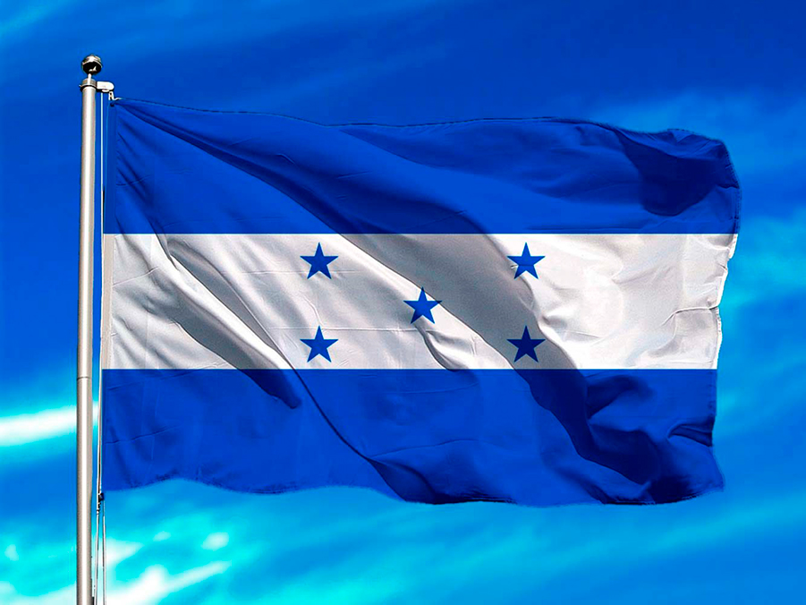

Bandera Actual: El diseño de la Bandera Nacional de Honduras estuvo a cargo de Manuel José
Arce.Su diseño consta de tres franjas horizontales. Los dos exteriores de color azul turquesa y la franja de en medio
de color blanco adornada por cinco estrellas de cinco puntas también de color azul turquesa.
Las franjas azules representan los dos océanos que rodean a Honduras, el océano Atlántico por el norte y el océano
Pacifico por el sur. Además del cielo hondureño y los ideales de justicia, lealtad, fraternidad, fortaleza, dulzura,
valor, amor fraternal y los generosos ideales que unen a los hondureños.

Escudo nacional de Honduras:Por iniciativa de don Dionisio de Herrera en su cargo como Jefe de Estado de
Honduras, decretó la creación de un Escudo Nacional, el 3 de octubre de 1825. El representa de su historia y la variedad de
los recursos naturales que poseen y los cuales deben proteger y conservar.
El soberano Congreso Nacional en el decreto No. 216 y en el artículo 142 considera al Escudo como Símbolo Nacional para todos
los usos, de modo claro y general.

Ave Nacional:La Guara Roja o Guacamaya Roja es nativa de Honduras, principalmente de La Mosquitia y gracias a un
proyecto de conservación se le puede encontrar volando libremente en el parque arqueológico de Copán Ruinas, ahora declarado Valle Sagrado
de la Guacamaya Roja.
Su hábitat se extiende desde el sureste de México hasta las selvas de Cochabamba en Bolivia, prefiere los bosques tropicales húmedos
cerca de abundantes fuentes de agua .
Flor Nacional:La Orquídea (Rhyncholaelia digbyana) fue declarada Flor Nacional de Honduras el 25 de
noviembre de 1969, por Decreto n.° 96, durante la gestión del general Oswaldo López Arellano.
Rhyncholaelia digbyana es una especie de orquídea epífita originaria de Honduras, donde por las noches llena el aire
con las fragancias de su perfume parecido a los cítricos.
Esta orquídea, conocida como «orquídea de la Virgen», es la flor nacional de Honduras, debido a sus características
excepcionales de belleza, vigor y distinción.

Árbol Nacional:El Pino fue elegido por el gobierno del entonces presidente Miguel Paz Barahona,
quién mediante acuerdo No. 429 emitido el 14 de Mayo de 1928 resolvió declarar el Pino como Árbol Nacional de Honduras.
Su elección como representante de la flora nacional esta basada en el hecho que el Pino es el árbol que de manera natural
predomina en los bosques hondureños.
En la misma fecha se aprobó el reglamento para apoyar su cuidado e incentivar la reforestación por parte de las escuelas,
colegios y la población en general. También para evitar el daño que producen los incendios forestales y la mano del
hombre mediante la tala del bosque.

Historia de Honduras:GEl territorio que corresponde a la actual Honduras fue hogar de la civilización maya
durante el primer milenio de nuestra era, como lo testimonian las ruinas de Copán. Fue invadido después por los Aztecas y a continuación
por los Mosquitos.
En 1502, la región fue descubierta por Cristóbal Colón. La población indígena fue entonces diezmada por la conquista española y por las
enfermedades que trajeron los colonos. Sin embargo, muy pronto los pueblos se mezclaron y los mestizos llegaron a ser el grupo étnico
dominante de Honduras.

Extensión territorial:
Honduras es un estado unitario y se autodefine como libre, soberano e independiente. Limita al norte y
este con el mar Caribe, al sureste con Nicaragua, al sur con el golfo de Fonseca y El Salvador, y al
oeste con Guatemala. La extensión territorial de Honduras, comprendiendo todas sus islas, es de 112 492 km².
La organización territorial de Honduras divide el país, política y administrativamente, en 18 departamentos,
y estos en municipios, para un total de 298 municipios.
Departamentos:
- Atlántida
- Colón
- Comayagua
- Chiquimula
- Copán
- Cortés
- Choluteca
- El Paraíso
- Francisco Morazán
- Gracias a Dios
- Intibucá
- Islas de la Bahía
- La Paz
- Lempira
- Ocotepeque
- Olancho
- Santa Bárbara
- Valle
- Yoru
Lugares Turusticos más importantes:
Islas de la Bahía:
Sin duda uno de los más paradisiacos lugares turísticos de Honduras, un archipiélago caribeño rodeado de aguas
tibias y cristalinas, donde sumergirse en verdaderos tapices de corales y una extraordinaria biodiversidad
marina.
Tres son sus islas principales: Utila, Guanaja y Roatán.
Telá:
Pequeña ciudad puerto considerado uno de los balnearios costeros principales del Caribe Hondureño,
hogar de playas de ensueño y una desarrollada infraestructura turística característica por sus hoteles
de Lujo. Sumado a sus playas de arenas blancas y aguas turquesas, Tela presenta el atractivo de sus
entornos con parques nacionales como Jeanette Kawas o Punta Izopo junto a numerosas villas
Los Cayos Cochinos:
Otro grupo de islas que destacan por sus escenarios caribeños, conformados por dos pequeñas islas principales:
Cayo Menor y Cayo Mayor, y 13 cayos más pequeños de origen coralino.
El encanto de estas islas lo constituyen tanto sus escenarios marinos atiborrados de arrecifes de
coral como sus interminables playas de arenas blancas
La Ceiba:
Situada prácticamente al frente de Cayos Cochinos, corresponde a la tercera ciudad más grande
de Honduras, conocida por su litoral norte donde se extienden hermosas playas que dan al Mar Caribe.
Otro de sus atractivos corresponden a sus entornos, contando tanto con el Parque Nacional Pico Bonito, considerado el más biodiverso del
país, como con una serie de aldeas garífunas
Ruinas de Copán:
Uno de los lugares turísticos de Honduras más fascinantes, antigua capital de un reino maya que
prosperó entre los siglos V al IX. Hoy sus ruinas declaradas Patrimonio de la Humanidad por la UNESCO,
permiten retroceder en el tiempo, permitiendo apreciar lo que fue su esplendor a través de palacios,
pirámides, plazas, estelas y otros monumentos.